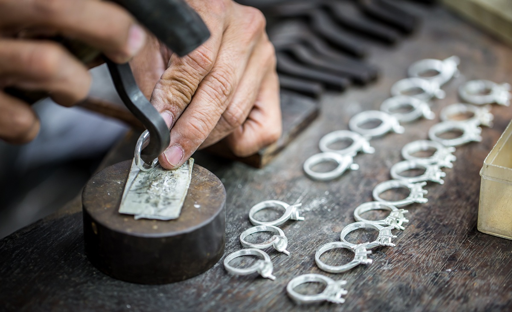

CUSTOM DESIGN


Personalized Jewerly, Made Just for You
At Gold Pebbles, we believe jewelry should be as unique as the person wearing it. That’s why we offer custom design services that allow you to bring your vision to life. Whether you have a specific idea in mind or need guidance in creating something special, we work closely with you to design a piece that reflects your personality, style, and story.
From reworking sentimental jewelry into modern designs to crafting one-of-a-kind statement pieces, our custom process ensures that every detail is thoughtfully considered. With a focus on sustainability, we can also incorporate recycled metals, repurposed materials, or eco-friendly filaments into your design. Your jewelry should be meaningful, and with Gold Pebbles, you’ll have a piece that is truly yours.
Upcycled & Remade Jewerly
Jewelry holds memories, and instead of letting old, broken, or forgotten pieces collect dust, why not transform them into something new? At Gold Pebbles, we specialize in upcycling vintage and pre-loved jewelry into fresh, modern designs. Whether it’s an old spoon turned into a bold statement ring or a broken necklace reimagined into a delicate charm, we breathe new life into treasured materials.
Not only does upcycling reduce waste, but it also allows you to hold onto the sentimental value of your original jewelry in a form that better suits your style. If you have a piece you no longer wear but aren’t ready to part with, we can work together to redesign it into something you’ll love for years to come.
Made-To-Fit, Inclusive Sizing
Finding the perfect jewelry shouldn’t be a struggle, no matter your size. At Gold Pebbles, we offer customizable sizing to ensure that every customer gets a comfortable and flattering fit. Many traditional brands overlook larger sizes, but we believe that everyone deserves to wear jewelry that makes them feel confident and stylish.
Whether it’s rings, bracelets, or statement pieces, our custom sizing options mean you no longer have to settle for designs that don’t quite fit. We take precise measurements and tailor each piece to your needs, so you can enjoy high-quality, beautifully crafted jewelry without compromise.
